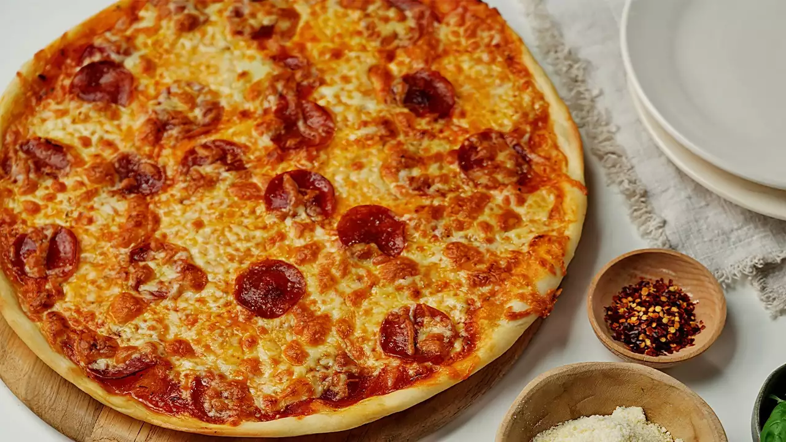

Thin Crust Pizza

Description
This delicious thin crust pizza dough recipe is so low maintenance, you can throw it together in just 15 minutes
Ingredients
- Yeast: 1 teaspoon of active dry yeast
- Sugar and Water: Mix the sugar and water, then use this to activate the dry yeast
- Flour: All purpose flour
- Salt: just a pinch. Makes dough more elastic
Steps
- Activat the yeast with the sugar and water
- Make the dough
- Knead the dough
- Roll the dough into a circle
- Add toppings
- Bake at 500 F for 8-10 minutes